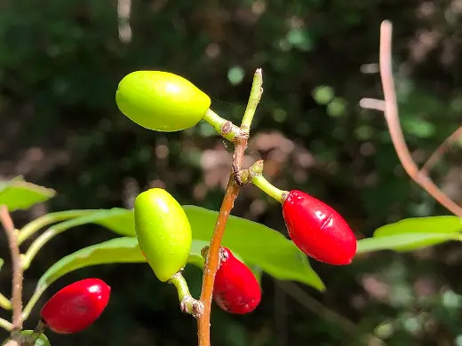

Drinks · Popular in Northeast, Southeast and Midwest
Spicebush tea
Spicebush tea is made with wild spicebush, a favourite in Northeast, Southeast and Midwest.

How do you make spicebush tea?
Twigs and leaves simmered into a citrusy, spicy tea.
Wild ingredients
- Spicebush (Lindera benzoin): in season August to October
Watch the recipe

Video: Trillium: Wild Edibles on YouTube